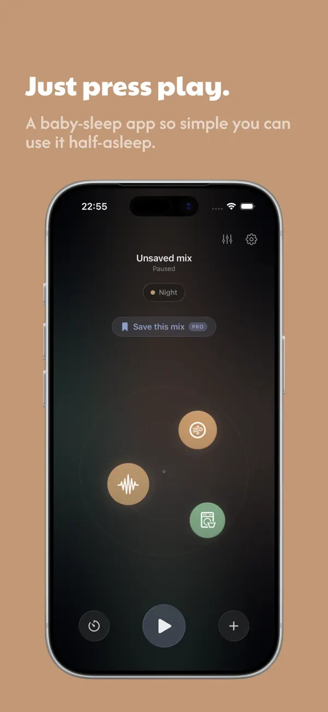
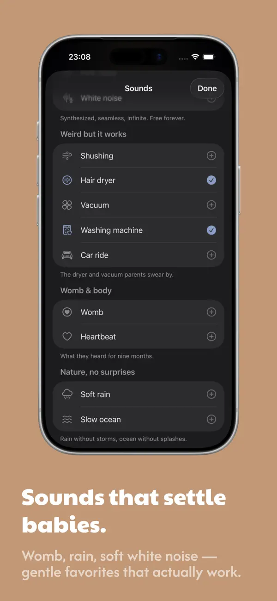
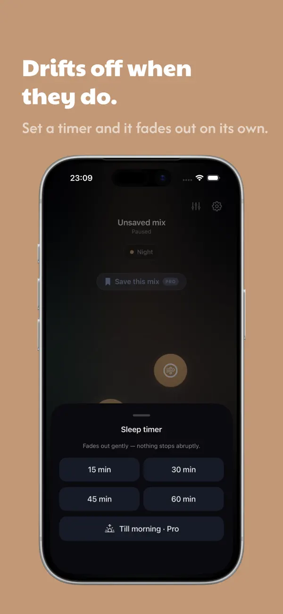

A sleep app you can use half-asleep.
Tysha is white noise for the 3 a.m. shift — real-time sound for settling a baby, designed to be run one-handed, in the dark, by someone who is exhausted and out of patience.


The design brief was a moment: 3 a.m., one hand, a crying baby, and a screen too bright.
01 — The problem
The context is hostile. The app has to be kind.
A parent reaching for a white-noise app at 3 a.m. is half-asleep, holding a baby with one arm, in a dark room, with zero patience. Most apps meet that moment with the opposite: sign-in walls, ads, audible looping tracks, buried controls, and a screen that lights up the whole nursery.
So the problem wasn’t “make white noise.” It was design for the worst moment of the day — and get out of the way fast enough that the parent can put the phone down and the baby can settle.
02 — Product thinking
Three principles, all pointed at calm.
One hand, half-asleep
Every core action lives within a thumb’s reach and works on the first tap. No hunting, no reading, no precision required.
Generated, never looped
Sound is synthesized in real time — seamless and infinite, with no audible repeat — and it keeps working with no internet at all.
Calm by subtraction
No accounts, no ads, no sign-up. Fewer choices and less chrome mean faster relief and nothing to distract at the worst hour.
03 — Who it’s for
The people at the crib.
Personas grounded in Tysha’s audience — and the insights that shaped the app.
The new parent
0–6 months in, chronically sleep-deprived, often one-handed. Has no patience for setup and won’t remember a password. Success = sound playing within a second of opening.
The light-sleeping partner
Cares that it runs all night, fades gently, and never interrupts with an ad or a reconnect. Values privacy and offline reliability over features.
- “
A parent’s own words on looping tracks: “the repeat wakes me before it wakes the baby.”
- “
The most-wanted sounds weren’t “nature” — they were hair dryers, vacuums, the womb and brown noise.
- “
Every second of setup at 3 a.m. is a second of crying — so the target is sound playing in under a second.
04 — Key UX & UI decisions
Designing for the dark.
Sounds you blend by touch
The home is a calm, near-black canvas with floating sound nodes you tap to bring in and out, and one big play button anchored where a thumb naturally rests. Mixing is physical and forgiving — no sliders to land precisely, no menus to read.
A sound list that speaks parent, not engineer
Sounds are grouped the way tired parents actually think — “weird but it works” (hair dryer, vacuum, washing machine), “womb & body,” “nature, no surprises” — each with a reassuring one-line caption. It’s a synthesized library that’s seamless, infinite and free.
Save the mix, fade it out, put the phone down
A working mix can be saved as a “Room,” started with Siri or the Lock Screen, and handed a gentle fading sleep timer — so the whole interaction can end with the phone face-down on the nightstand and the baby drifting off.

05 — Design system
Warm, quiet, and built for the dark.
The app lives on a deep, warm near-black so it never lights up a nursery, with a single amber glow to guide the eye and oversized, rounded tap targets that forgive shaky, half-asleep aim. The voice is gentle and a little witty — reassurance, never instruction.
Component language
- Sound nodes
- Big play control
- Saved “Rooms”
- Fading timer
- Categorized picker
- Reassuring captions
- Lock-Screen / Siri
- Offline-first
Large targets, minimal chrome and one accent kept the whole app legible at a glance — and made it possible to design and build it solo without the system fragmenting.
06 — Outcomes
What shipped.
Live on the App Store — a few honest markers of what it is.
07 — More